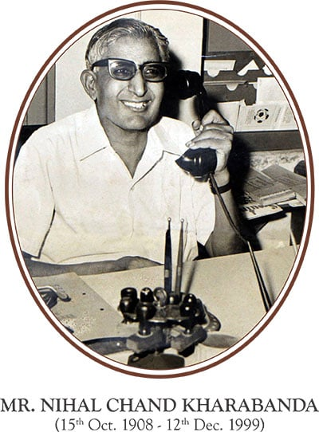
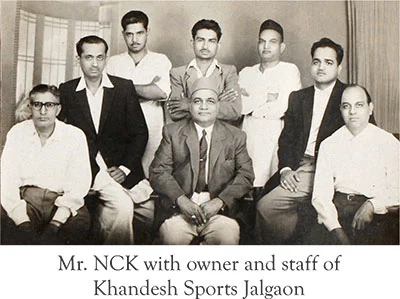

Our Founder

Mr. Nihal Chand Kharabanda (NCK), born 15th October 1908, was the second in line of seven sons of a small grocery store owner, Hari Chand Kharbanda and Veerawali, living in 28 Chak Village near Layalpur, now Faislabad. He achieved the distinction of studying up to the 10th standard in the British Indian school system and set out to explore his world.
Fortunate and proud to get a job as an assistant storekeeper in Uberoi and Company started by Mr. Ganda Singh Uberoi, the founder of the sports industry of India and Pakistan, NCK started his career with a salary of mere Rs. 30 per month. That job took him to various branches of Uberoi and Company in Sialkot, Pune and Rangoon, enabling him to gain work
experience and learn the sports trade. With a strong belief in his abilities and a burning passion for succeeding, in 1934, at the age of 26, he took a leap of faith to start his own small business to trade raw materials in the now flourishing sports manufacturing trade in Sialkot.

Penniless, but with his spirits and passion still intact, he started a new and began trading in sports strings, bladders and other sports articles needed by sports shops. Khandesh and Company in Jalgaon became Freewill's first dealer in Independent India.
Meerut in Uttar Pradesh and Jalandhar in Punjab soon became the hub of skilled entrepreneurs and craftsmen who had been displaced from the Sialkot sports industry and had come to India as refugees. Following the same footsteps, NCK, with his wife and son, initially shifted to Meerut and then to Jalandhar in 1950, when the Government of Punjab allocated the industrial plots to refugees from Pakistan to start the industry in India.
The plot S-32 Industrial Area, Sports Town, Jalandhar, still serves as the registered office of Freewill. This plot of land is intrinsically and deeply tied with the Freewill and NIVIA stories. It was the first home of Mr. Nihal Chand Kharabanda's family (until 1986) and also served as the birthplace of the present Chairman and Managing Director, Mr. Rajesh Kharabanda